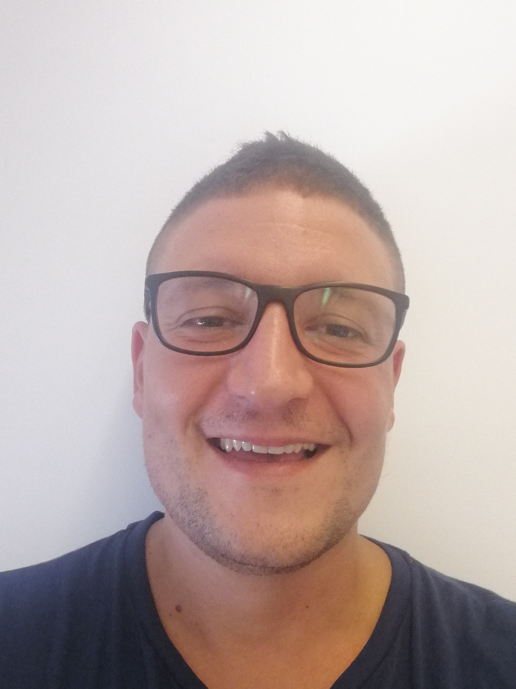

Senior Backend Engineer
Pietro
Della Notte.
Oltre 12 anni di esperienza nel backend. PHP, Laravel, Yii2 e MySQL sono gli strumenti; progettare software è il lavoro.

Una prospettiva backend.
Sviluppo
PHP, Laravel, Yii2.
Competenze tecniche dichiarate dal proprietario.
Dati
MySQL.
Il database nel contesto delle architetture backend.
Esperienza
Oltre 12 anni.
Percorso iniziato nel 2013, da presentare con una cronologia sintetica.
Scritti scelti.
Destrutturazione di array in PHP, spiegata semplice
Chiarezza, anche nei dettagli del codice.
Differenza simpatica tra for loop e forEach in JavaScript
La stessa selezione utilizzata nelle altre due direzioni.
Le opportunità iniziano
da un dialogo.
Per ruoli e opportunità professionali, puoi contattarmi direttamente.